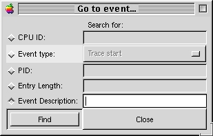

| Linux Trace Toolkit Reference Manual | |||
|---|---|---|---|
| <<< Previous Page | Home | Up | Next Page >>> |
The Linux trace toolkit provides a means by which you can search for a specific event. This is done through the Go to event.. window:

Figure 1: The Go To Event window
To use it, simply select the type of query you will provide, enter it and click the Find button. Searching will begin after the currently selected event in the raw event list and all events will be searched.
The following query types are allowed:
When a result is found, the matching event is selected and scrolled to in the raw event list. Errors are reported in the main window's status bar.
| <<< Previous Page | Home | Up | Next Page >>> |
| Linux trace toolkit | Go To Event... window | ||